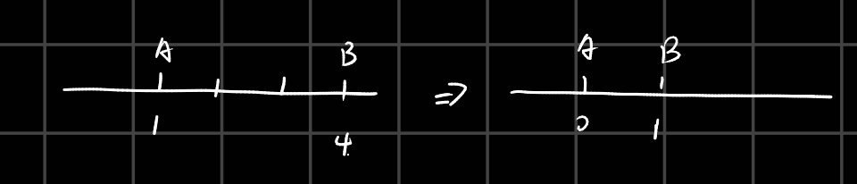
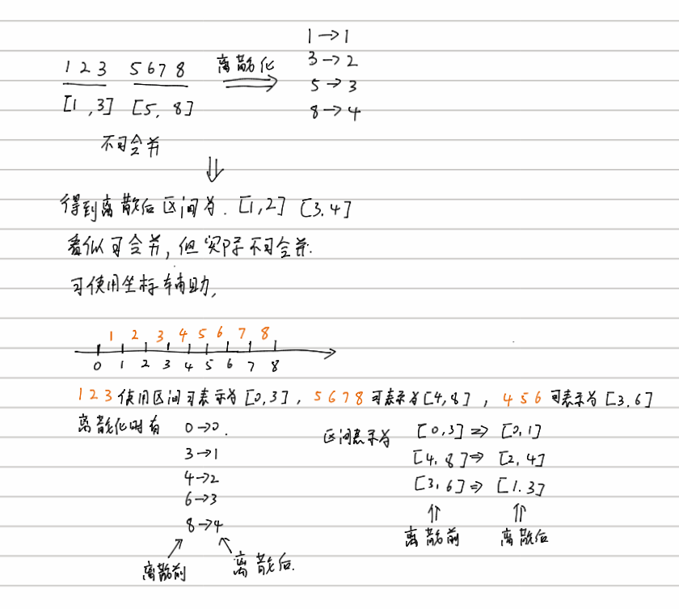
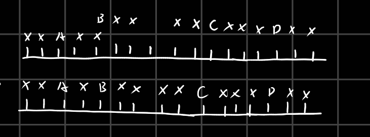

离散化需要注意的点
如果算法解需要通过点的距离来进行求解，那么离散化再使用原算法会出现问题，因为点经过离散化后，坐标发生改变，距离计算也就不正确了。举个例子：
假如我们判断两点相邻，那么两点之间的差距为1即可认为两点相邻。但是经过离散化后，上述结论并不成立，因为下图：

可以看到AB点本身不相邻，但是在离散化后使用两点坐标差为1的方法判断距离就会认为AB相邻。
解决上述问题主要有两种方法。 1.
将算法改进，使得算法不依赖距离计算。
例如一组连续编号的物品才可以合并，现有两组物品编号连续，请问是否可以合并。如果判断两组物品之间最大最小值之间是否差1，则使用离散化会出现问题。将有体积的物品转为无体积的点，即可解决连续判断的问题。

convert_alg
- 添加多余的点，如果算法要判断两点间距离是否相差k，那么在每个点的前后都应该插入距离小于等于k的点再进行离散化
例如，判断两点之间差距是否为2，则A点前后需要插入与其相距为0、1、2距离的点。

insert_posi_
可以看到AB间点距离为2离散化后不变，AC间距离和AD间距离大于2，离散化后也正确表示了。
闭合区间交集数量
闭区间中由于区间端点相交也算交在一起，所以使用上述方案，将端点视为实体，于是\([a,b]\) ==> \((a - 1,b)\)，例如下题：
https://codeforces.com/contest/2037/problem/F
题目可以转换为存在多个区间，求解多个区间相交的数量。区间为实数区间，但是相交被定义为整数点相交。例如\([2.1,4.2]\)任何区间包含3，4都算与其相交，但是2不算，因为区间内没有整数2，\([2,5]\)中包含了2，3，4，5这几个点。
这里将区间\([a,b]\)视为区间\([ceil(a), floor(b)]\),
利用上述点视为实体的思想，计算相交。具体代码如下：
1
2
3
4
5
6
7
8
9
10
11
12
13
14
15
16
17
18
19
20
21
22
23
24
25
26
27
28
29
30
31
32
33
34
35
36
37
38
39
40
41
42
43
44
45
46
47
48
49
50
51
52
53
54
55
56
57
58
59
60
61
62
63
64
65
66
67
68
69
70
71
72
73
74
75
76
77
78
79
80
|
#include<bits/stdc++.h>
using namespace std;
#define ll long long
#define lll __int128
#define DEBUG0
const int mod1 = 1e9 + 7;
const int mod2 = 998244353;
const int maxx = 1e5 + 10;
int n,m,k,h[maxx],x[maxx];
bool check(int times){
map<int,int>mp;
for(int i = 0;i < n;i++){
int g = m - (h[i] + times - 1) / times;
if(g >= 0){
mp[x[i] - g - 1] += 1;
mp[x[i] + g] -= 1;
}
}
int cnt = 0;
for(auto iter = mp.begin();iter != mp.end();iter++){
cnt += iter->second;
if(cnt >= k){
return true;
}
}
return false;
}
int main()
{
int t;
cin>>t;
while(t--){
cin>>n>>m>>k;
int l = 1,r = 0;
for(int i = 0;i < n;i++){
scanf("%d",&h[i]);
r = max(r,h[i]);
}
r+=1;
for(int i = 0;i < n;i++){
scanf("%d",&x[i]);
}
bool flag = false;
while(l < r){
int mid = (l + r) >> 1;
if(check(mid)){
flag = true;
r = mid;
}
else {
l = mid + 1;
}
}
if(flag){
cout<<l<<endl;
}
else cout<<-1<<endl;
}
return 0;
}
|
看一道题目
传送门
本题的解决方案是使用了区间表示连续序列，a,a + 1,a + 2,a + 3,a + 4使用区间[a - 1,a + 4]表示。剩余使用dp计算，dp[i][j]表示从0-i覆盖次数大于等于2，[i+1,j]表示覆盖次数大于等于1
1
2
3
4
5
6
7
8
9
10
11
12
13
14
15
16
17
18
19
20
21
22
23
24
25
26
27
28
29
30
31
32
33
34
35
36
37
38
39
40
41
42
43
44
45
46
47
48
49
50
51
52
53
54
55
56
57
58
59
60
61
62
63
64
65
66
67
68
69
70
71
72
73
74
75
76
77
78
79
80
81
82
|
#include<bits/stdc++.h>
using namespace std;
#define ll long long
#define lll __int128
#define DEBUG0
const int mod1 = 1e9 + 7;
const int mod2 = 998244353;
const int maxx = (200 + 10);
const int maxn = (1e5 + 10);
int dp[2][maxx][maxx];
int discret[maxn];
int posi[maxx * 2];
int n,m;
struct line
{
int st,en;
bool operator < (const line & l)const {
if(st != l.st)
return st < l.st;
return en < l.en;
}
}li[maxx];
int main()
{
cin>>n>>m;
for(int i = 0;i < m;i++){
cin >> li[i].st >> li[i].en;
li[i].st--;
posi[i * 2] = li[i].st;
posi[i * 2 + 1] = li[i].en;
}
sort(posi,posi + 2 * m);
if(posi[0] != 0 || posi[2 * m - 1] != n){
cout<<0<<endl;
return 0;
}
discret[posi[0]] = 0;
for(int i = 1; i < 2 * m; i++){
discret[posi[i]] = discret[posi[i - 1]] + (posi[i] != posi[i - 1]);
}
int max_length = discret[posi[2 * m - 1]];
sort(li,li+m);
for(int i =0;i < m;i++){
li[i].st = discret[li[i].st];
li[i].en = discret[li[i].en];
}
dp[0][0][0] = 1;
for(int i = 0;i < m;i++){
memcpy(dp[1],dp[0],sizeof(dp[0]));
for(int l = li[i].st;l <= max_length;l++){
for(int r = l;r <= max_length;r++){
int new_l = min(r,max(li[i].en,l));
int new_r = max(r,li[i].en);
dp[0][new_l][new_r] = (dp[0][new_l][new_r] + dp[1][l][r]) % mod2;
}
}
}
cout<<dp[0][discret[n]][discret[n]]<<endl;
return 0;
}
|